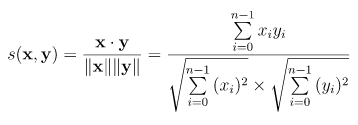

In machine learning, measuring similarity and distnace of data is core in many machine learning tasks. In unspervised classification task, distance is used to assign classes. In recommendation engines, recommended list can be created from similarity of used contents (Content-Based Recommendations) or similarity of user profile (User-based Collaborative Filtering). In Natural Language Processing (NLP) task, key words in document is extracted based on similarity algorithm.
By understanding similarity and distance algorithms, we can improve machine learning performance. This is my wrap-up of Similarity and distance algorithms.
Similarity algorithms determine the most similaar object with the highest similarity metrics.
The cosine similarity calculates the cosine of the angle between two vectors.
Formula:
Python Script:
Cosine similarity is for comparing two real-valued vectors, but Jaccard similarity is for comparing two binary vectors (sets).
Formula:

Python Script:
xxx
| xxxx | xxxx |
|---|---|
| xxxx | xxxx |
🌐 SciPy Reference Guide: Scipy Statistical functions
🌐 SciPy Reference Guide: Scipy Distance functions